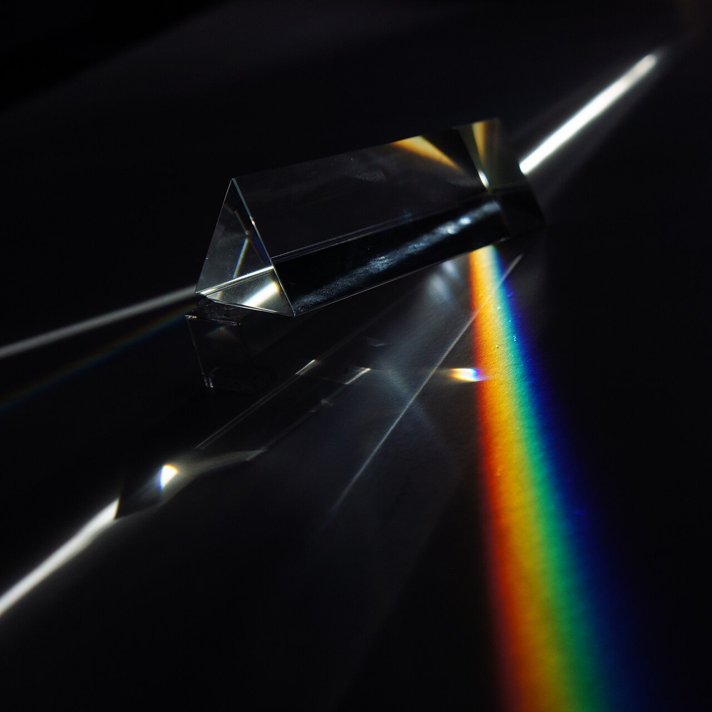
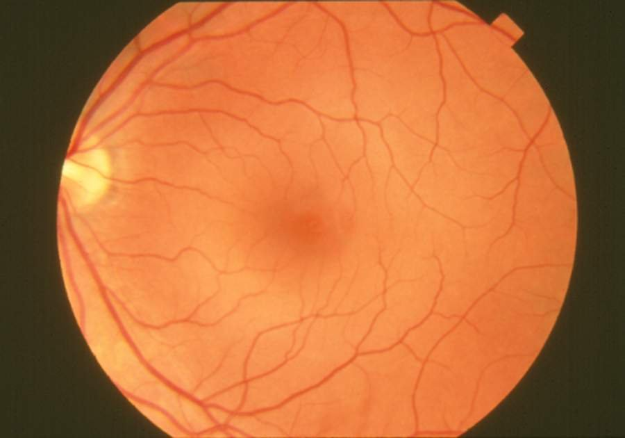
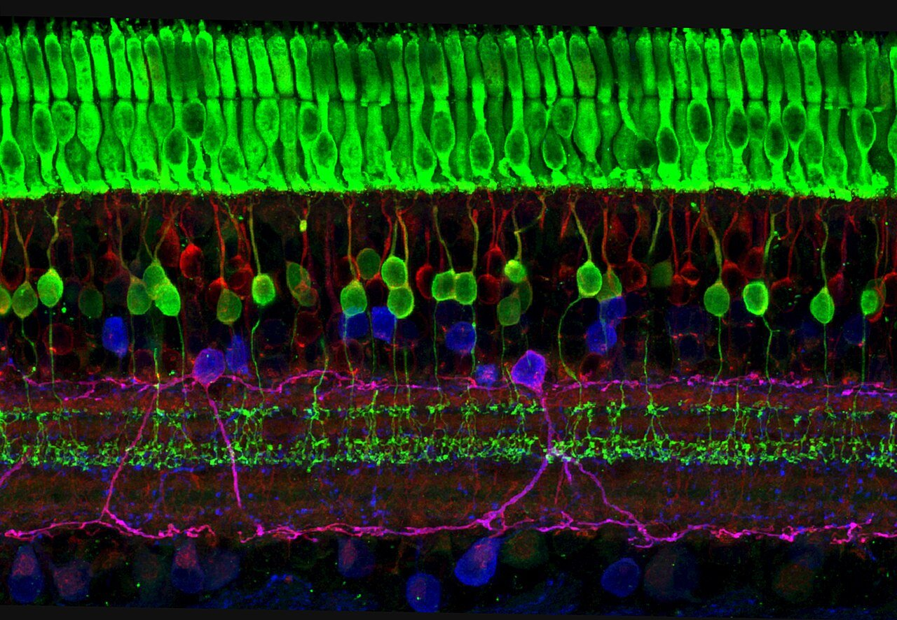
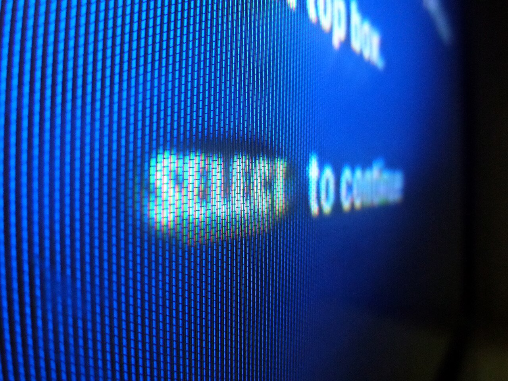
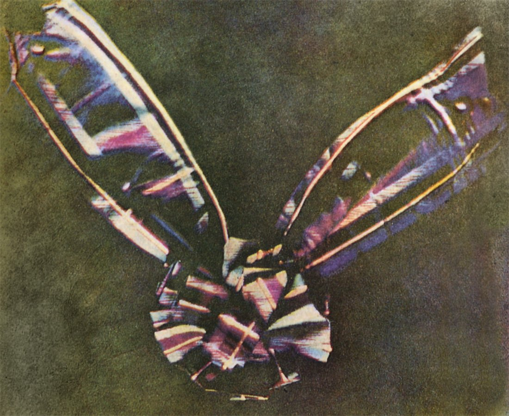
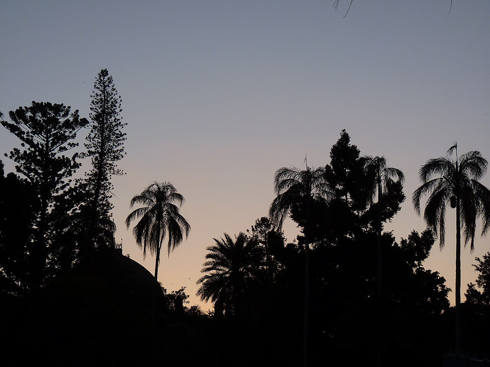
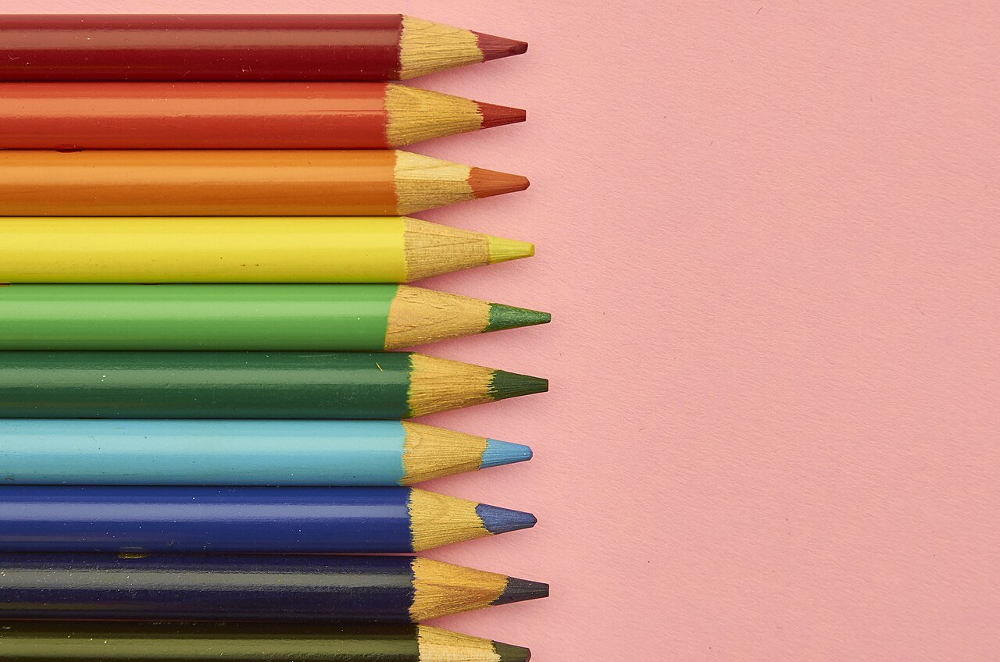
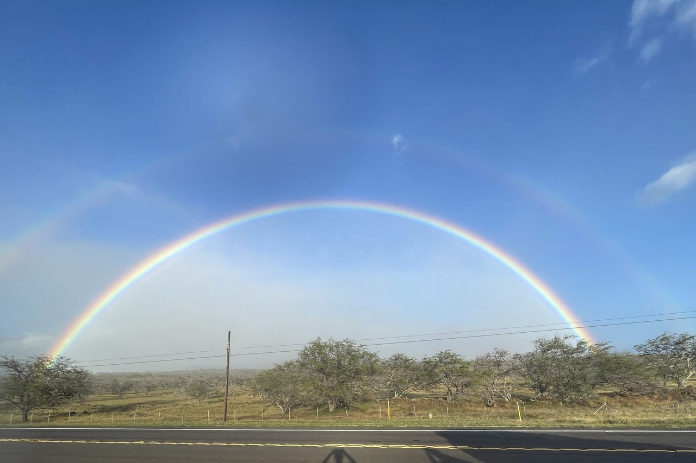

自然・科学 Nature & Science目は、どうやって色を見分けている？
目の奥にある色のセンサーは、たった3種類。その感度をくらべた図と、画面の接写で、色が生まれるしくみをたどります。あなたが見ているリンゴの赤は、本当にリンゴの中にあるのでしょうか。
2026.10.23 UP 約5分で読める 文：SOMOSOMO編集部
写真：Prism flat rainbow／Kelvinsong（2013年、CC0）
イギリス、1666年のはじめ。のちの本人の手紙によれば、若いアイザック・ニュートンは部屋を暗くし、窓の板戸に小さな穴をあけて、日の光をひと筋だけ入れました。その通り道に置いたのは、三角柱のガラス「プリズム」。向かいの壁には、赤から紫まで色の並んだ、細長い光の帯が映りました。
白く見える日の光は、いろいろな色の光が混ざったものでした。ニュートンはのちに、この研究をまとめた本にこう書いています。「光線には、正確に言えば、色はついていない」。では、私たちが見ている色は、いったいどこで生まれているのでしょうか。
In a word
目の奥には、主に青・緑・赤の光によく反応する3種類の細胞 があります。脳はその3つの反応の比率 をくらべて、色を作り出しています。色は光そのものではなく、目と脳の中で生まれる感覚です。
01
Three Sensors
色のセンサーは、たった3種類しかない
目の奥には、光を受けとる薄い膜「網膜（もうまく）」があります。カメラでいえば、光を記録するセンサーにあたる部分です。ここに並ぶ「視細胞」のうち、色を見分ける役目をもつのが「錐体（すいたい）」です。
錐体には3種類あり、どの色の光にいちばん反応するか（感度の山）が違います。光の色を決めるのは波長（光の波の長さ）です。3種類は山の波長が短い順に S・M・L と呼ばれ、山はおよそ420・530・560ナノメートル（1ナノメートルは100万分の1ミリ）にあります。
だいたい青・緑・赤の光によく反応する と考えると、わかりやすいでしょう。
Fig.01 人の目の3種類の錐体は、どの光によく反応する？
紫・青
緑
黄・橙
赤
S（青）
約420nm
M（緑）
約530nm
L（赤）
約560nm
400 500 600 700
光の波長（nm＝ナノメートル）
見どころは、赤い線の L の山が、じつは緑の範囲にあること。L は赤そのものにいちばん反応するわけではありませんが、長い波長、つまり赤の側までよく反応するのは L だけです。山の形は模式図で、位置には人による幅があります。
大事なのは、1種類の錐体だけでは色がわからない ことです。L が同じ強さで反応しても、それが「弱めの黄緑の光」なのか「強い赤い光」なのか、L だけでは区別できません。
そこで脳は、3種類の反応の比率をくらべます。L が強くて M が弱めなら赤っぽい色。L が M よりやや強く、S がほとんど反応していなければ黄色。そんな具合に、比率の違いを色の違いとして受け取っています。


目の奥の、薄い膜 左は、健康な目の網膜を、瞳の側から写した眼底写真。右は網膜の断面を染め分けた顕微鏡写真で、いちばん上の緑の層が、光を電気の信号に変える視細胞です（色は染料の色）。写真：Fundus photograph-normal retina ／National Eye Institute, NIH（パブリックドメイン）、Layers of nerve cells in the retina ／Wei Li, National Eye Institute, NIH（2008年、パブリックドメイン）
ちなみに、色のセンサーが3種類なのはミツバチも同じです。ただし組み合わせは紫外線・青・緑。同じ花がハチにはどう見えているのかは、ハチの目の記事 でくわしく紹介しています。
02
Three Dots
画面の色は、赤・緑・青の点だけでできている
この「比率で色を決める」しくみを、毎日うまく使っているのが、テレビやスマホの画面です。画面を虫めがねで拡大すると、赤・緑・青の小さな光の点 が、すき間なく並んでいるのが見えます。

明るい文字も、3色の粒 テレビの画面を斜めから接写した写真。左の白っぽく光る文字のまわりに目をこらすと、赤・緑・青の細長い光の粒が並んでいるのが見えます。写真：Pixels in a TV screen ／NonNerd（2016年、CC0）
3色の明るさを変えれば、3種類の錐体の反応の比率を自由に作れます。たとえば緑と赤の点を光らせると、L と M が反応し、S はほとんど反応しません。明るさを加減すれば、黄色の光が届いたときとそっくりの比率になります。だから黄色の点がひとつもないのに、黄色に見える わけです。
Fig.02 違う光なのに、同じ黄色に見える
① 黄色の光（約580nm）1本だけ
届く光
580
400 波長 700
L M S
ほとんど反応しない
→ 黄色に見える
② 緑（約530nm）と赤（約630nm）を混ぜた光
届く光
530
630
400 波長 700
L M S
ほとんど反応しない
→ これも黄色に見える
3つの反応の比率が同じなら、
脳にはどちらも同じ「黄色」
画面の黄色は、②のしくみで作られている
見どころは、左の「届く光」は1本と2本で違うのに、右の3本の棒は上下で同じ長さになっていること。錐体の反応の比率が同じなら、脳には見分けがつきません。棒の長さは考え方を示す模式図です。
色は3種類の反応の組み合わせで決まる──。この考えは19世紀、イギリスのトマス・ヤングに始まり、ドイツのヘルムホルツが実験で発展させました。1861年には、物理学者マクスウェルがこの考えを写真で試しています。

3枚を重ねた、最初のカラー写真 マクスウェルの提案で、写真家トマス・サットンがタータンチェックのリボンを赤・緑・青紫のフィルターごしに3回撮影し、重ねて映したもの。消えずに残る形で作られた、最初のカラー写真とされます。写真：Tartan Ribbon ／James Clerk Maxwell（撮影：Thomas Sutton）（1861年、パブリックドメイン）
03
After Dark
暗くなると、色から先に消えていく
夜道や明かりを消した部屋で、ものの形はわかるのに、色がよくわからない。そんな経験はないでしょうか。網膜には、錐体のほかに「桿体（かんたい）」という視細胞があります。数は錐体よりずっと多く、わずかな光にもよく反応します。暗い所で主に働くのは、この桿体です。
ところが、桿体は1種類しかありません。くらべる相手がいないので比率が作れず、明るいか暗いかはわかっても、色まではわかりません 。夜の景色が灰色っぽく見えるのは、このためです。
1819年、チェコの生理学者ヤン・プルキニェは、明け方の散歩で、昼間は真っ赤に見える花が暗く沈んで見えることに気づきました。桿体は、赤い光にはほとんど反応しません。そのため薄暗くなると、赤は先に暗くなり、青や緑は比較的明るく残ります 。今では「プルキニェ現象」と呼ばれています。

日が沈むと、空は灰色へ オーストラリア・ブリスベンの植物園の、夕暮れの空と木々。地平線の近くには夕焼けの色が残りますが、空の上のほうはもう灰色です。さらに暗くなると、目は桿体に頼るようになり、この夕焼けの色も見分けにくくなっていきます。写真はイメージです。写真：Dusk sky and silhouettes City Botanic Gardens Brisbane ／John Robert McPherson（2011年、CC0）
04
Many Ways of Seeing
同じ色が、同じように見えているとは限らない
錐体のはたらきには、生まれつきの個人差があります。L や M の錐体の感度の山がずれていたり、どちらかがなかったりすると、赤と緑など、一部の色の組み合わせが見分けにくくなります。
医学では「先天色覚異常」と呼ばれ、日本眼科学会は「色の感じ方が異なること」と説明しています。日本では男性の約5％、女性の約0.2％ に見られます。
男性に多いのは、L と M の錐体を作る遺伝子が、X 染色体という性染色体の上にあるためです。X 染色体を1本しかもたない男性では、違いが表に出やすくなります。違いがごく小さく、自分では気づいていない人もいるとされます。
Fig.03 M と L の山が近づくと、どうなる？
多くの人：M と L の山が少し離れている
S
M
L
M の山が L に近い場合（例）：ほぼ重なる
S
M
L
400 500 600 700
光の波長（nm）
見どころは、下の段で黒い破線（M）と赤い線（L）の山がほとんど重なっていること。赤い光でも緑の光でも M と L の反応の差が小さくなり、比率の違いをつかみにくくなります。ずれ方や程度は人によってさまざまで、これは一例の模式図です。
色だけで区別させない工夫は「カラーユニバーサルデザイン」と呼ばれ、少しずつ広がっています。たとえば教科書には、色分けに模様や実線・破線を添えるものがあります。黒板のチョークにも、色ごとの明るさや鮮やかさに差をつけて、見分けやすくしたものがあります。
ここまでは、目の中の錐体の話でした。けれど、色を最後に決めるのは脳です。そして脳の受け取り方にも、人による違いがあります。
2015年2月、1枚のドレスの写真が SNS で世界中に広まりました。ある人には「青と黒」、別の人には「白と金」に見えたのです。実物は、青い生地に黒いレースのドレスでした。
脳はふだん、照明の色を差し引いて、ものの本当の色を推し量っています。写真の光を「青っぽい日陰」と受け取った脳は、青みを照明のせいとして取り除くので、ドレスは白と金に。「黄色っぽい明かり」と受け取った脳は黄みを取り除くので、青と黒に見える──という説明があります。
ただ、なぜここまで分かれるのかは、まだ決着がついていません。気になる人は「the dress 2015」で写真を検索して、自分には何色に見えるか試してみてください。

同じ名前で、同じ色を見ている？ 「赤」「緑」と同じ名前で呼んでいても、頭の中の見え方まで人どうしで同じかどうかは、確かめるのがむずかしい問題です。写真はイメージです。写真：Colored pencils lined up on pink surface ／Artsy Crafty（CC0）
05
By the Numbers
暗がりのセンサーは、色のセンサーの十倍以上
数百万個 1つの目の網膜にある錐体の数。資料により約460万〜700万個Curcio ほか、1990年。Wikipedia 英語版「Cone cell」
約 1億個 1つの目の網膜にある桿体の数。資料により約9,200万〜1億2,000万個Curcio ほか、1990年。Wikipedia 英語版「Rod cell」
498nm 桿体がいちばんよく反応する光の波長。色でいえば青緑Wikipedia 英語版「Cone cell」

空にかかる、二重の虹 ハワイ島の北側で見られた二重の虹。空の雨粒がプリズムの役目をして、日の光を色ごとに分けています。写真：Double rainbow on the big island ／Jdszekeres（2024年、CC0）
Here's the Fun Part
ここが面白い！
虹やプリズムの帯には、赤から紫まで、光の色が波長の順に並んでいます。ところが、その中をいくら探しても見つからない色があります。ピンクがかった赤紫、マゼンタ です。
マゼンタは、赤い光と青紫の光が同時に届き、そのあいだの緑の光が少ないときに見える色です。L と S の錐体は反応するのに、M はあまり反応しない。そんな比率を作る光は、虹の中のどの1色にもありません 。脳が、比率の組み合わせから新しく作り出した色です。
実はニュートンも、虹の両端の赤と紫を重ねると、虹にない色ができることを示していました。色は、光の中ではなく、私たちの頭の中にある──。冒頭のニュートンの言葉が、ここでもう一度よみがえります。
リンゴの赤も同じです。リンゴの皮は、日の光のうち赤い側の光を多くはね返しているだけ。その光を「赤」という色にしているのは、見ているあなたの脳です。
次に虹を見かけたら、赤と紫のあいだを探してみてください。そこにない色を、私たちは毎日、花びらやスマホの画面の上で見ています。